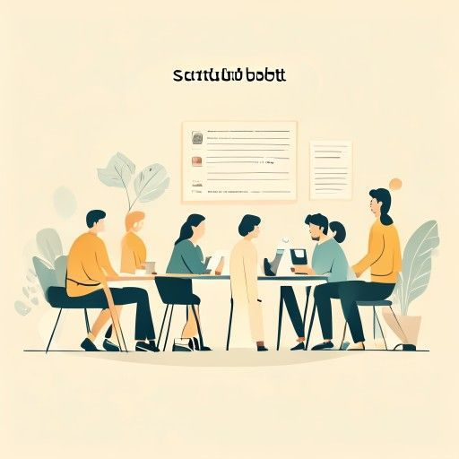
scuttlebutt
rumor or gossip, especially spread informally among coworkers.
S1E4 — "So what do you guys hear? What's the scuttlebutt?"
captures the show's core engine — office rumor about downsizing that drives half the season.
58 words across all seasons and episodes.

rumor or gossip, especially spread informally among coworkers.
S1E4 — "So what do you guys hear? What's the scuttlebutt?"
captures the show's core engine — office rumor about downsizing that drives half the season.
to treat someone with excessive care or indulgence; to overprotect.
S1E3 — "I don't believe in coddling people. In the wild, there is no health care."
Dwight's management philosophy in one word; a common word in workplace and parenting debate.
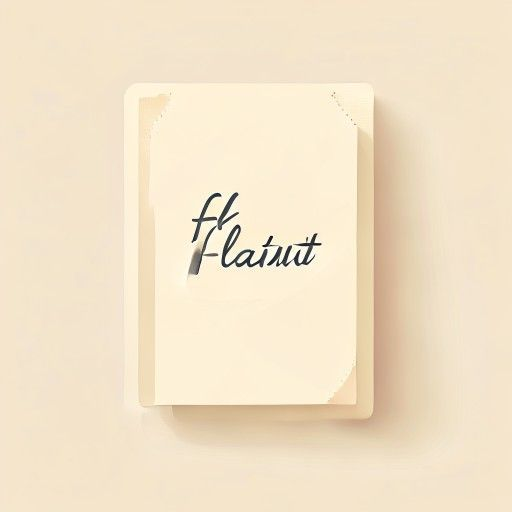
to display something ostentatiously in order to provoke envy or admiration.
S1E4 — "I really wasn't gonna flaunt this. I have made a very sizeable donation."
ironic self-description — Michael claims not to show off while doing exactly that.
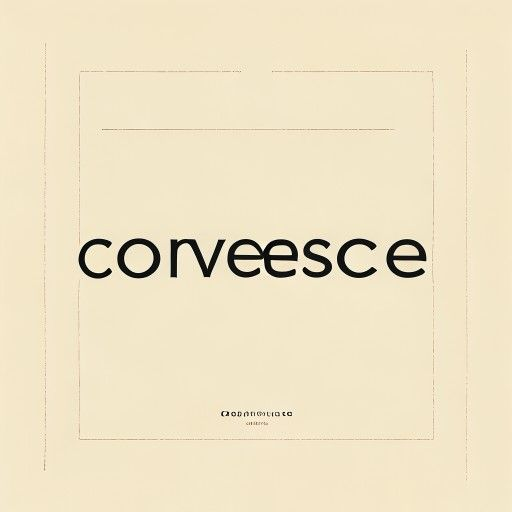
to recover gradually after an illness (Michael misuses it for "come together").
S1E4 — "generosity and togetherness and community all convalescences into morale."
worth knowing the real meaning precisely because the show mangles it — a classic malapropism.
to enter or gain access to a place or group secretly, usually with hostile intent.
S1E6 — "Girls, you're being infiltrated."
high-frequency in news and spy/business contexts; recurs in Dwight's paranoid worldview.
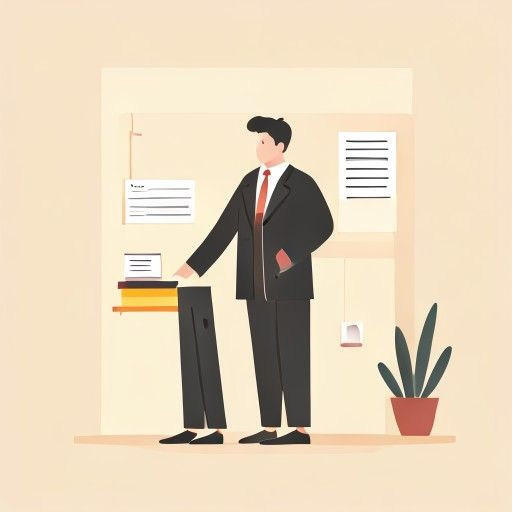
a person who tries to sell goods or services door-to-door, or (in UK) a type of lawyer.
S1E6 — "I usually don't allow solicitors in the office, but today I am going to break some rules."
the "no solicitors" sign is everywhere in American life; also a useful UK/US contrast.
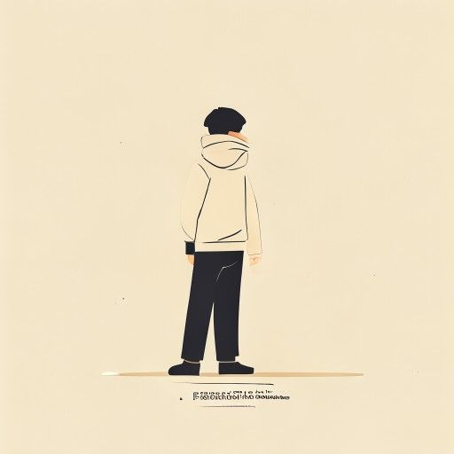
a person who carries out a harmful, illegal, or immoral act.
S1E3 — "I'll have to interview each of you until the perpetrator makes himself known."
essential vocabulary for any crime or wrongdoing narrative.
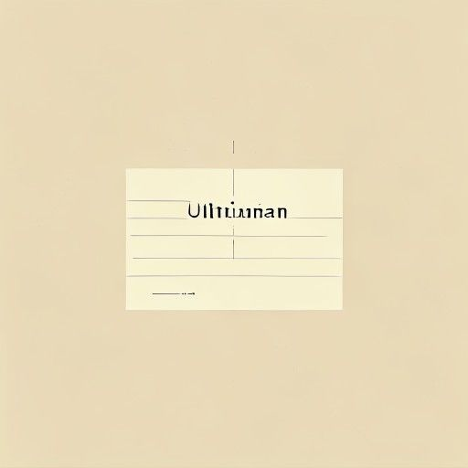
a final demand whose rejection will result in retaliation or a breakdown in relations.
S1E1 — "Corporate has deemed it appropriate to enforce an ultimatum upon me."
the driving threat of the whole downsizing arc; core negotiation vocabulary.
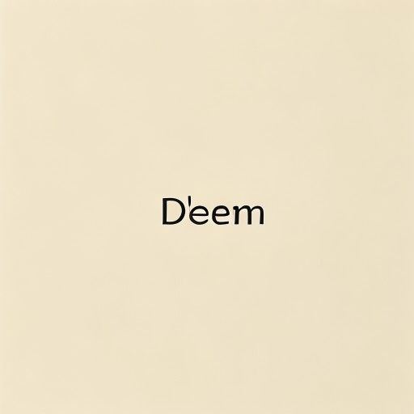
to regard or consider something in a specified way; to judge formally.
S1E1 — "Corporate has deemed it appropriate to enforce an ultimatum."
a formal, high-register verb common in legal, corporate, and journalistic writing.
to gather or acquire something, especially respect, support, or information.
S1E1 — "I think I garner people's respect."
a polished alternative to "get" that signals advanced register.
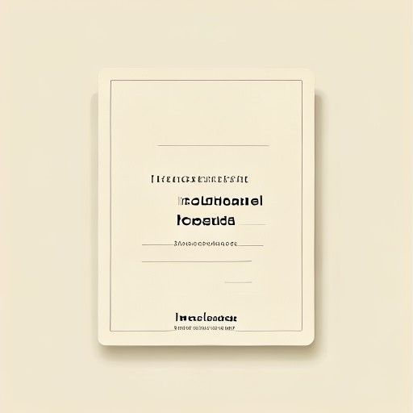
too great to be measured or counted; immense.
S1E1 — "It's really beyond words. It's really incalculable."
Michael reaches for a big word to praise his heroes; useful for emphasizing scale.
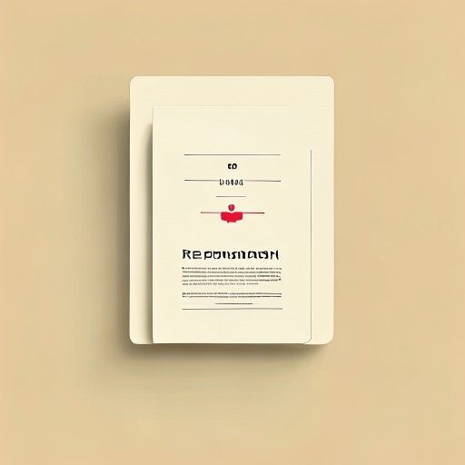
to rebuke someone formally and sharply for wrongdoing.
S1E1 — "Can you reprimand him?"
the precise word for official disciplinary criticism, common at work.
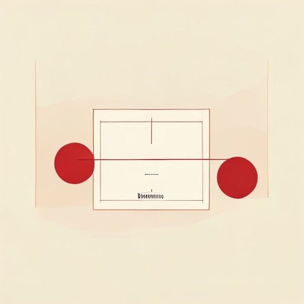
the setting or marking of a boundary or limit.
S1E1 — "One word, two syllables. Demarcation."
Dwight's fussy boundary over his desk; a formal term used in geography, law, and labor.
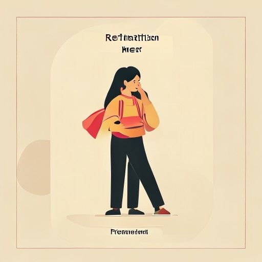
the act of returning a wrong or injury; revenge in kind.
S1E2 — "Retaliation. Dit fortit." (Dwight, mangling the Latin)
key term in workplace-conduct and legal contexts (e.g. "retaliation claims").
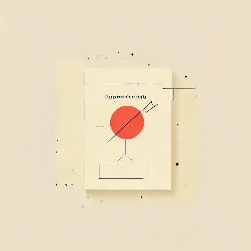
an idea or feeling that a word evokes beyond its literal meaning.
S1E2 — "Well, it has certain connotations." "Like what?"
essential for discussing language, tone, and implication precisely — directly relevant to IELTS.
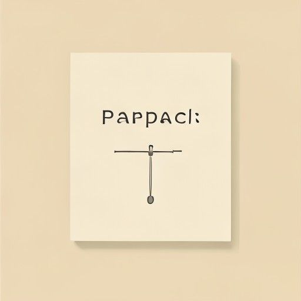
a statement or situation that seems self-contradictory but may be true.
S1E2 — "a lot of other races are also intolerant of gays, so paradox."
a staple of academic and argumentative writing.
a fundamental basis on which something is built or depends.
S1E2 — "Diversity is the cornerstone of progress, as I've always said."
a strong metaphor for essay writing ("the cornerstone of the economy").
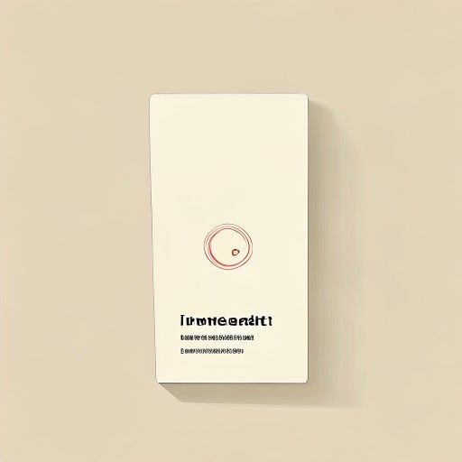
not resulting from intention; accidental or unintentional.
S1E2 — "No, that was inadvertent. We didn't actually plan that."
a precise, formal way to say "by accident"; its adverb *inadvertently* is very common.
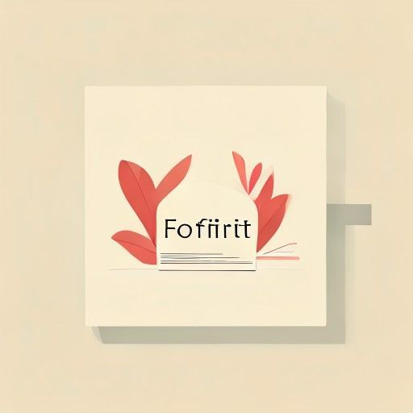
to lose or give up a right or privilege, usually as a penalty.
S1E3 — "You have forfeited that privilege."
common in law, sport, and finance; signals consequence and loss.
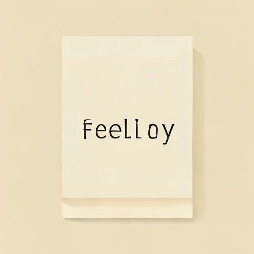
a serious crime, typically one punishable by more than a year in prison.
S1E3 — "Someone forged medical information. That is a felony."
foundational American legal vocabulary (contrast with *misdemeanor*).
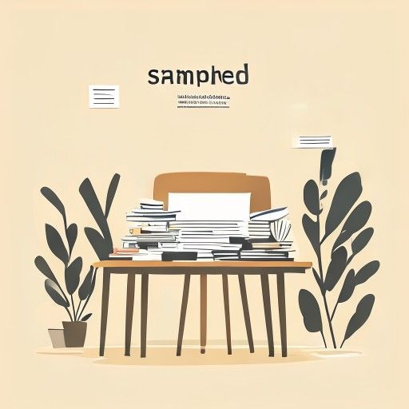
overwhelmed with too much work or too many things to deal with.
S1E3 — "I am in my office. I am swamped. I have work up to my ears."
an idiomatic, natural way to describe being overloaded — very useful in speaking.
a close and harmonious relationship with easy communication.
S1E5 — "I can tell her it's part of the job. Rapport."
a French-derived word essential to describing interpersonal and professional relationships.
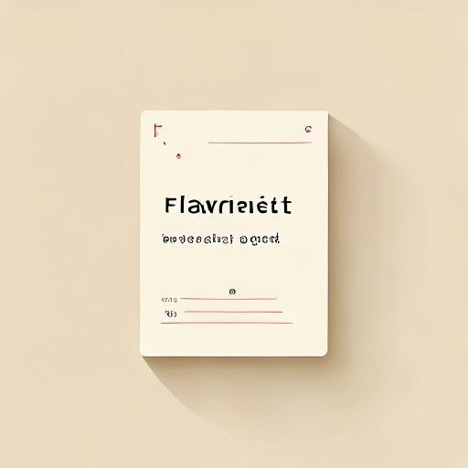
conspicuously offensive; blatant and obviously bad.
S1E5 — "That was a flagrant, intentional foul."
carries strong disapproval; common in "flagrant violation / foul / abuse."
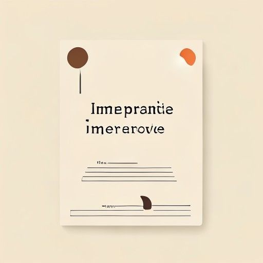
of vital importance; absolutely necessary.
S1E6 — "To be a ladies' man, it's imperative people don't know you're a ladies' man."
a high-register substitute for "essential," strong in formal writing.
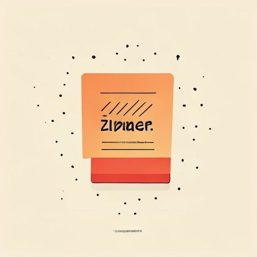
a striking or witty remark, often a pointed insult delivered quickly.
S1E5 — "Oh, Pam, with a zinger."
a lively, informal word for a clever comeback; enriches conversational range.
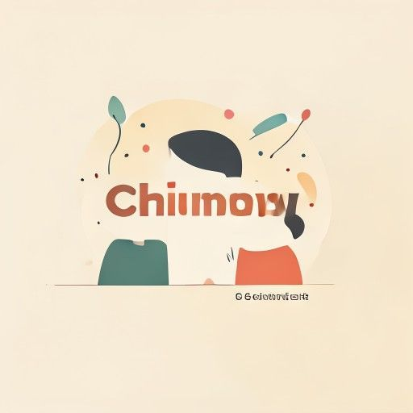
friendly, often in a way that seems overly or suspiciously close.
S1E4 — "They seem awfully chummy, don't you think?"
carries a subtle negative undertone — useful for nuance beyond just "friendly."
to postpone discussion of a matter (US); to formally propose it (UK).
S1E3 — "We'll table that for now." (about how many people Dwight can fire)
a business-meeting verb with opposite US/UK meanings — worth pinning down.
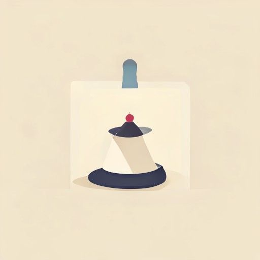
to keep something secret or under control; to prevent it from becoming public.
S1E1 — "So do you think we could keep a lid on this for now?"
natural idiom for containing news or emotion, very common at work.
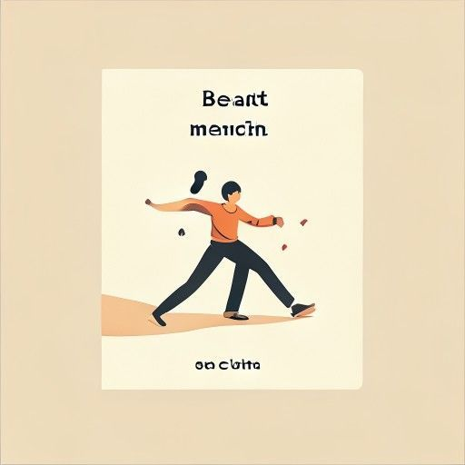
to do something before someone else gets the chance to.
S1E2 — "Corporate mandated it. They kind of beat me to the punch, the bastards."
a vivid, high-frequency idiom about being pre-empted.
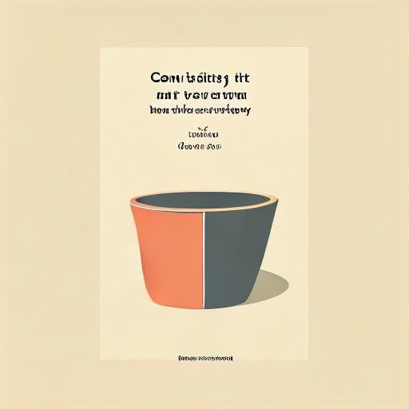
to be good at criticizing or teasing others but unable to accept the same in return.
S1E5 — "You can dish it out but you can't take it."
a very common conversational idiom about hypocrisy in banter.
money paid to an employee on the termination of their job.
S1E1 — "We're not going to have to give you any severance pay."
essential employment vocabulary, central to the downsizing theme.
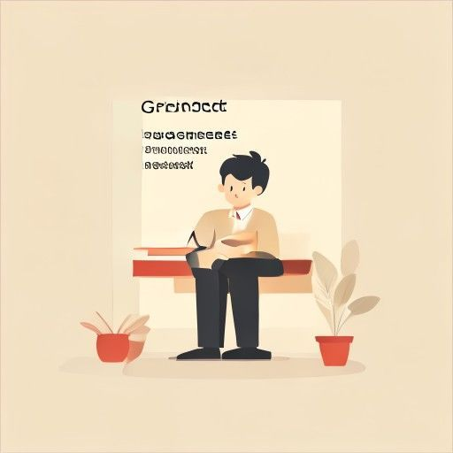
serious workplace wrongdoing that can justify immediate dismissal.
S1E1 — "That is gross misconduct and… Just clean out your desk."
a fixed legal-HR term you'll meet in any contract or dismissal context.
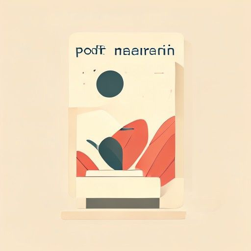
the difference between the cost of producing something and the price it sells for.
S1E1 — "If you steal a thousand Post-it Notes… you've made a profit margin."
core business vocabulary, useful well beyond the joke.
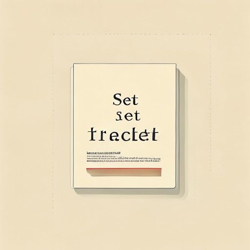
to correct a mistaken belief by giving the true facts.
S1E1 — "I want to set the record straight. I'm Assistant Regional Manager."
a natural idiom for clarifying or correcting, common in speech and writing.
to exploit a person or situation, often unfairly, for one's own benefit.
S1E1 — "People sometimes take advantage because it's so relaxed."
two-sided phrasal verb — can mean "use well" or "exploit"; both are high-frequency.
a person looked to by others as an example to be imitated.
S1E1 — "I think I'm a role model. I think I garner people's respect."
an idiomatic fixed phrase you'll use constantly when discussing influence.
to officially require something by authority or law.
S1E2 — "It's something I've been wanting to push… and Corporate mandated it."
formal verb (and noun) common in policy, corporate, and political language.
unwilling to accept views, beliefs, or behavior different from one's own.
S1E2 — "A lot of other races are also intolerant of gays, so paradox."
key word for discussing prejudice and diversity; pairs with *tolerance*.
to act out or perform a past event or scene again.
S1E2 — "We'll reenact this with a more positive outcome."
useful for describing simulations, dramas, and historical recreations.
in an honest and straightforward way, without concealment.
S1E2 — "Michael, can I talk to you candidly?"
a polished way to introduce frank speech; *candid* is very useful.
an oversimplified, fixed idea about a type of person or thing.
S1E2 — "based on stereotypes that are totally untrue, that I do not agree with."
indispensable for discussing culture, bias, and generalization.
a joke exploiting a word's multiple meanings or similar-sounding words.
S1E2 — "I thought that would be too explosive. No pun intended."
the phrase "no pun intended" is extremely common; worth owning.
the amount you must pay yourself before an insurance policy pays the rest.
S1E3 — "There's no dental, there's no vision, there's a $1,200 deductible."
core insurance vocabulary central to the health-care-plan episode.
not able or willing to communicate with other people; unreachable.
S1E3 — "I am unreachable. I am incommunicado, capisce?"
a vivid, slightly formal word for going off the grid.
a protein the immune system produces to fight a specific infection.
S1E3 — "If you've never been sick, then you don't have any antibodies."
useful health/science vocabulary, and the setup for Dwight's absurd logic.
the state of keeping information secret or private.
S1E3 — "What about confidentiality?" "You have forfeited that privilege."
essential in professional, legal, and medical contexts.
to produce a fraudulent copy or imitation, especially of a document.
S1E3 — "Someone forged medical information. That is a felony."
distinct from "forge ahead"; the fraud sense is high-frequency in crime contexts.
a union or agreement to cooperate, formed for mutual benefit.
S1E4 — "It might be a good idea if you and I formed an alliance."
the running joke of the episode; key term in politics, business, and strategy.
exposed to the possibility of being harmed, attacked, or dismissed.
S1E4 — "Now we need to figure out who's vulnerable and who's protected."
a high-value word across health, security, emotion, and employment.
to accept or overlook behavior that is generally considered wrong.
S1E4 — "I don't appreciate condoning corporate fraud though."
a precise word for tacit approval of wrongdoing; common in formal argument.
to work secretly, often disguised, to gather information.
S1E4 — "I told him that he should dye his hair to go undercover."
a natural collocation from spying and policing, used figuratively too.
to sacrifice someone, leaving them to be blamed or attacked.
S1E4 — "Get some information, throw him to the wolves. That's politics, baby."
a vivid idiom for betrayal under pressure — memorable and reusable.
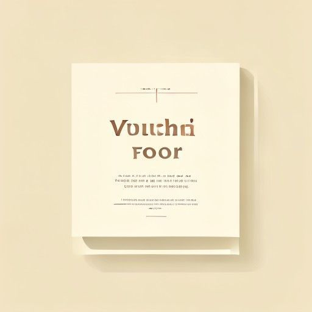
to assert or guarantee the truth, reliability, or good character of someone.
S1E5 — "I vouched for you. I vouched for you in front of Todd Packer, Dwight."
the standard phrasal verb for personally backing someone; very common.
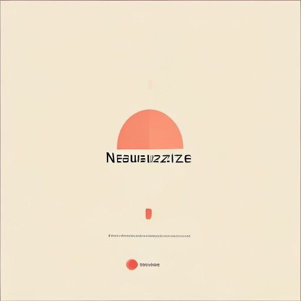
to render something ineffective or harmless; to counteract.
S1E5 — "Jim, take over the vacation schedule." "Threat neutralized."
useful across security, chemistry, and figurative "dealing with a problem."
a person who acts as a substitute or backup for another.
S1E5 — "We need you as an alternate in case somebody gets hurt."
the noun/adjective sense (a stand-in) is easy to miss for learners.
a group of people who share a common purpose; an entourage (informal).
S1E5 — "Me and my posse guys are gonna be in your face."
a lively, informal word for one's crew, now common in everyday slang.
boastful or insulting talk intended to intimidate an opponent.
S1E5 — "Gonna wish me luck?" "Is that trash talk from Pam?"
ubiquitous in sports and competitive banter; a genuinely current term.
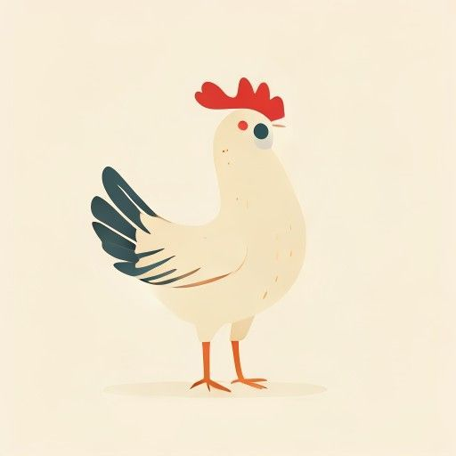
to decide not to do something because of fear or loss of nerve.
S1E5 — "I see, you're chickening out on me."
a very common informal phrasal verb for backing down.